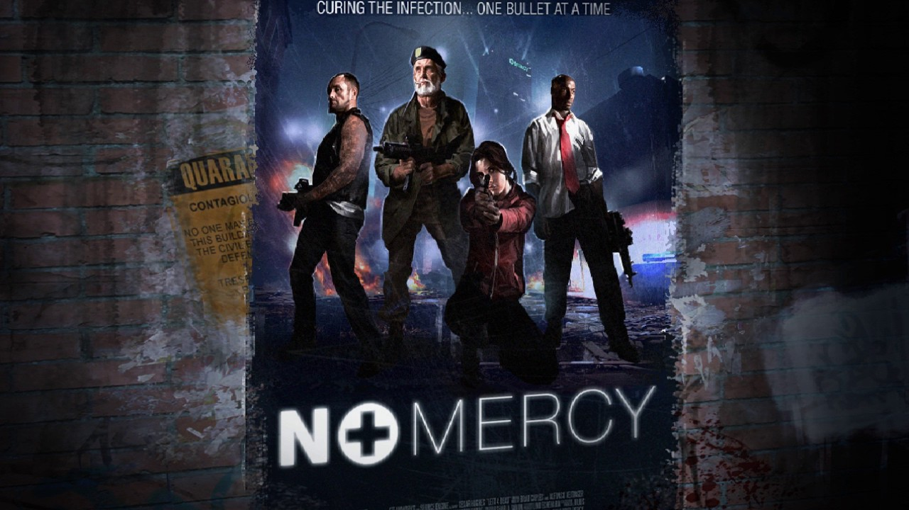
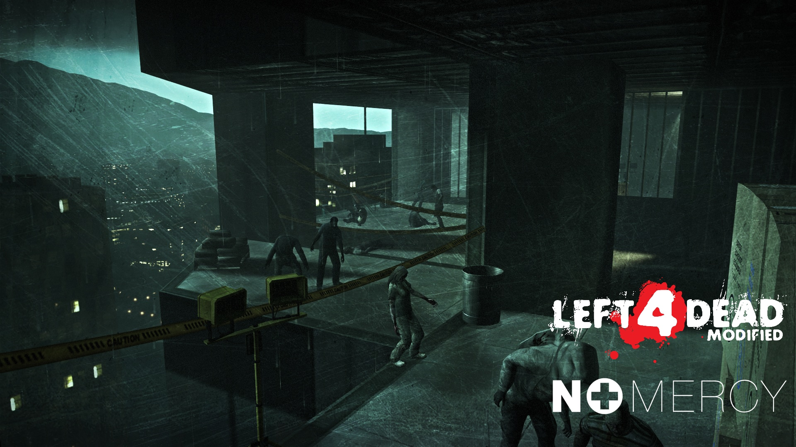

No Mercy es la campaña de inicial de Left 4 Dead, en una pandemia zombi en la que los supervivientes deben abrirse camino hasta el Hospital Mercy. Cuatro supervivientes: Bill, Zoe, Francis y Lewis deben abandonar la ciudad devastada y escapar hasta el helipuerto del Hospital Mercy.

La campaña comienza en un callejón oscuro y estrecho donde los supervivientes acaban de salir de su escondite. Este nivel introduce los tipos básicos de infectados. Los sobrevivientes viajará a través de edificios dañados y calles infestadas de zombis, encontrándose con hordas de Hunters, Smokers y Boomers. La tarea principal es llegar a la estación de metro que los mandara directamente a la entrada del hospital.
Tras recorrer las calles, los supervivientes se adentran en los bajos fondos de la ciudad. Este nivel sucede en una serie de túneles oscuros y trenes abandonados que aumentan la tensión claustrofóbica. Los sobrevivientes deben tener cuidado con las emboscadas de zombis y mantenerse en grupo para evitar separarse en los inmensos pasillos. El objetivo principal es llegar a las alcantarillas donde hay una salida a la superficie.
Saliendo del metro, los sobrevivientes se encuentran en las cloacas de la ciudad. Este nivel es uno de los más oscuros de la campaña, con pequeños túneles y aguas negras. Los sobrevivientes deben avanzar a través de las cloacas enfrentándose a oleadas de infectados que pueden surgir en cualquier momento. La misión principal es encontrar una escalera que los lleve a la superficie cerca del Hospital Mercy.
Finalmente, los sobrevivientes llegan al Hospital Mercy, pero subir hacía el helipuerto es lo más complicado de la campaña. Subir por los distintos pisos y salas es una tarea complicada debido a la infestación de zombis. El ambiente hospitalario desértico añade una sensación de incomodidad y hasta cierto punto, miedo. En esta parte, los sobrevivientes se enfrentan a la segunda mayor cantidad de infectados especiales de la campaña, incluyendo al temido Tank. La misión principal es alcanzar el ascensor que los llevará a los pisos superiores y eventualmente al techo del hospital.

La última parte de la campaña se desarrolla en el techo del Hospital Mercy. Los sobrevivientes deben activar una radio para llamar a un helicóptero de rescate y mientras esperan la llegada del helicóptero deben defenderse de las ultimas oleadas de infectados. Al paso de los minutos el helicoptero aparece y todos los sobrevivientes deben correr hacia el, terminando la campaña.